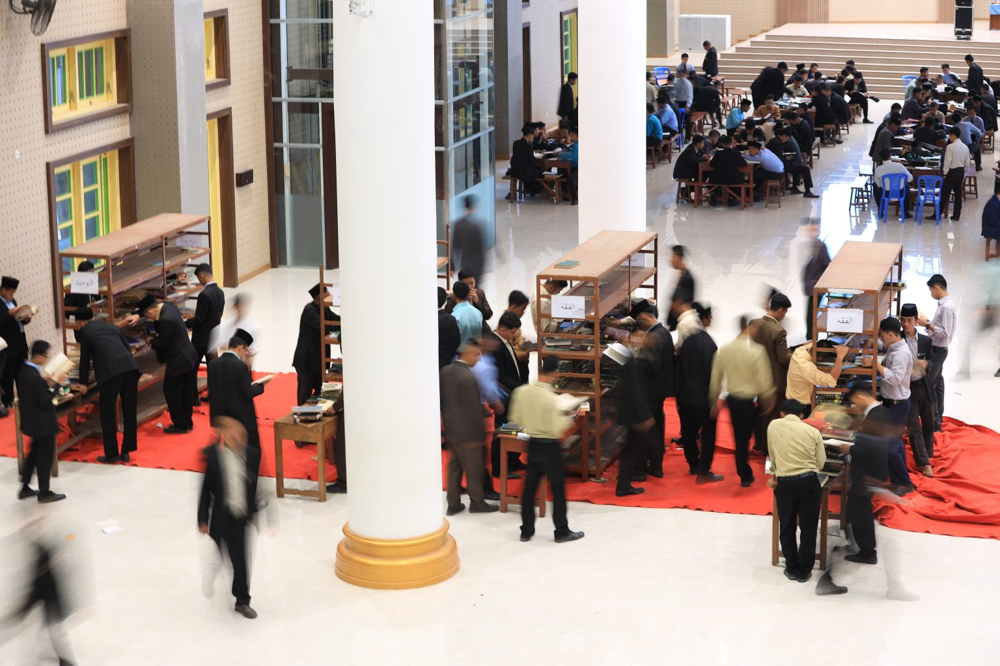

10 Juli 2026

Bukan Diskusi Biasa! Impervious Generation Bedah Masalah Kontemporer Pakai Kitab Klasik
GONTOR - Dalam rangka meningkatkan kemampuan akademis dan bahasa arab santri, Kuliiyatu-l-Mu’allimin al-Islamiyyah (KMI) Pondok Modern Darussalam Gontor (PMDG) mengadakan acara Fathul Kutub Turats Al-Islamiy bagi Siswa Akhir KMI 2027 Impervious Generation.
Baca Selengkapnya
→